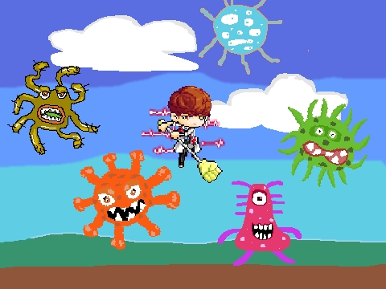

Pandemic
Pandemic เป็นเกมแนวผจญภัยซึ่งเราจะได้รับบทบาทเป็นหมอที่ต้องค่อยกำจัดไวรัสที่อยู่ในแต่ละด่านโดยตัวเกมจะมี concept ที่สอดคล้องกับชื่อเกมของเราที่หมายถึงโรคที่มีการระบาดแพร่กระจายออกไปในหลายประเทศหรือหลายทวีป โดยเราจะแบ่งเกมออกเป็นด่านๆซึ่งเปรียบเสมือนกับไวรัสที่แพร่กระจายออกไปในแต่ละทวีป โดยเราจะต้องฝ่าฟันในแต่ละด่านเพื่อที่จะได้ไปยังด่านสุดท้ายและกำจัดไวรัสให้หมดไป